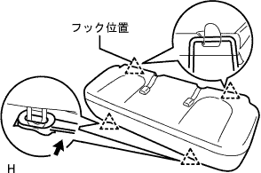

Speed sensor RR LH (4WD) Remove |
| 1. Battery minor Starminal Cut off |
reference| 2. Luggage room box lid removes |
Remove the luggage room box slid.
| 3. Luggage compartment tray is removed |
Remove the trunk (luggage compartment) tray.
| 4. Trunk (luggage compartment) Side tray is removed |
Remove the trunk (luggage compartment) side tray.
| 5. Remove the rear seat Batsuku ASSY |
 |
Make the rear seat back in advance.
Use the clip remover to remove the two clips.
 |
Turn over the rear seat back cover.
Remove the two bolts and remove the rear seat back ASSY.
| 6. Remove the rear seat cushion assy |
|  |
Press the clip lever in the direction of the figure, lift the front end of the rear seat cushion ASSY and remove the clip.
Remove the hook.
Remove the seat belt and remove the rear seat cushion ASSY.
| 7. Front doorskuff plate LH removed |
 |
Pull up by hand, remove the claw from behind the vehicle, and remove the front door skaf plate LH.
| 8. Deck side trim cover FR LH removed |
 |
Pull it in front of the vehicle by hand, remove the claws, and remove the deck child trim cover FR LH.
| 9. Reardoor opening Trim Weather Strip LH disconnection |
| 10. Backdoor with the strip separate |
| 11. Remove the backdoor scuff plate |
 |
Use the clip remover to remove the two clips.
Pull up by hand from the end of the trim cover, remove the clip, and remove the backdoor scuff plate.
| 12. Rear seat 3 point type belt ASSY OUT LH removed (floor anka part) |
Remove the bolt and remove the rear seat 3 point type belt ASSY OUT LH (floor anka).
| 13. Rena seat back hinge SUB-ASSY LH is removed |
Remove the bolt and remove the rear seat back hinge LH.
| 14. Deck Trim Side Panel ASSY LH is removed |
 |
Pull the side board in the inside of the vehicle, remove the clip and claws, and remove the deck trim side panel ASSY LH.
| 15. Remove the rear tire |
| 16. Speed sensor RR LH is removed |
Cut off the connector of the speed sensor RR LH and remove the grommet.
Remove the two bolts and separate the speed sensor wire from the body.
Remove the bolt and remove the speed sensor RR LH from the rear axle housing.